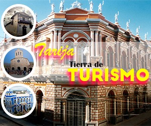
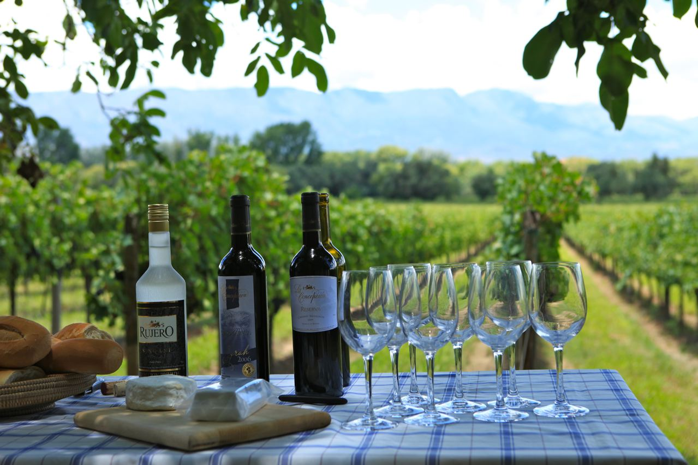
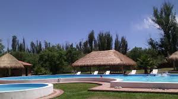
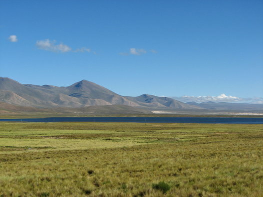
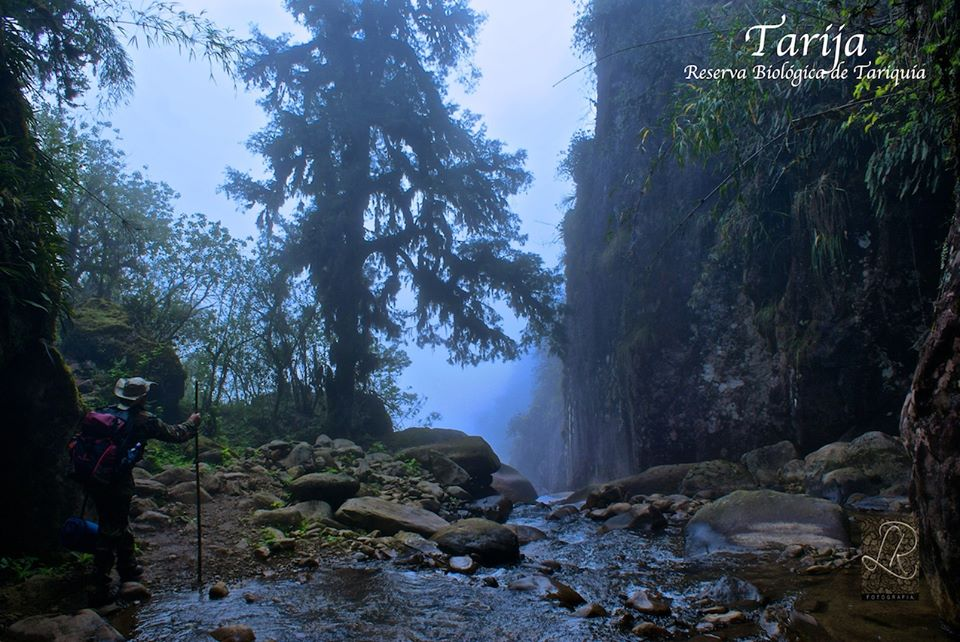

Turismo en Tarija
Tarija es la capital del departamento que lleva el mismo nombre y se encuentra a orillas del río Guadalquivir y al sur de Bolivia y cerca de la frontera con Argentina.
Tarija es la capital del departamento que lleva el mismo nombre y se encuentra a orillas del río Guadalquivir y al sur de Bolivia y cerca de la frontera con Argentina.
La ciudad de Tarija se encuentra en un amplio valle a una altura de 1.874 msnm. y cuenta con un clima agradable la mayor parte del año.
La ciudad es conocida como “Tarija la linda” o la “Ciudad de las flores”, el destino es ideal para los que busquen disfrutar del clima templado, visitar los diferentes atractivos turísticos, degustar vinos locales y conocer gente amable y simpática
Tarija fue fundada en el año 1574 por el español Luis de Fuentes y Vargas, quien la bautizó con el nombre de “Villa de San Bernardo de la Frontera de Tarixa”.
Tarija está muy bien conectada con el resto de Bolivia y con el norte de Argentina por rutas que se encuentran en buen estado.
La ciudad tiene una Terminal de Buses donde arriban flotas de buses desde diferentes ciudades bolivianas como por ejemplo: Santa Cruz de la Sierra, Cochabamba, Bermejo, Villazón y La Paz
Nuestros destinos a visitar

Ruta del vino y del singani
Tarija es famosa en Bolivia y el mundo por su producción de vino y singani. En las afueras de la ciudad hay grandes extensiones de viñedos y bodegas que se pueden visitar por los turistas. La mayoría de ellos se encuentran en el Municipio de Uriondo.

Balnearios Tomatitas y Tomatas Grande
A pocos kilómetros de la ciudad se encuentran diferentes balnearios y zonas para disfrutar del aire libre. Entre ellos se puede visitar el Balneario de Tomatitas que cuenta con servicios para los visitantes y se ubica muy cerca del Parque Nacional Las Barrancas. También el balneario Tomatas Grande es otro de los lugares elegidos para disfrutar del agua en los días de calor.

Cordillera de Sama, Altiplano Tarijeño
En los municipios cercanos de de Yunchará y El Puente se encuentra la Reserva Ecológica Cordillera de Sama, en su interior se protege la flora y fauna de la región además de los hermosos atractivos turísticos como lagunas, dunas de arena, bosques, etc…

Reservas Biológicas de Tariquía y Alarachi
Estas zonas de conservación ecológica encierran parte de la mayor biodiversidad boliviana. La selva de montaña se puede recorrer por senderos peatonales y descubrir la rica variedad de animales y plantas. Muchos animales de estas reservas se encuentran en grave peligro de extinción como los osos de anteojos y los jaguares